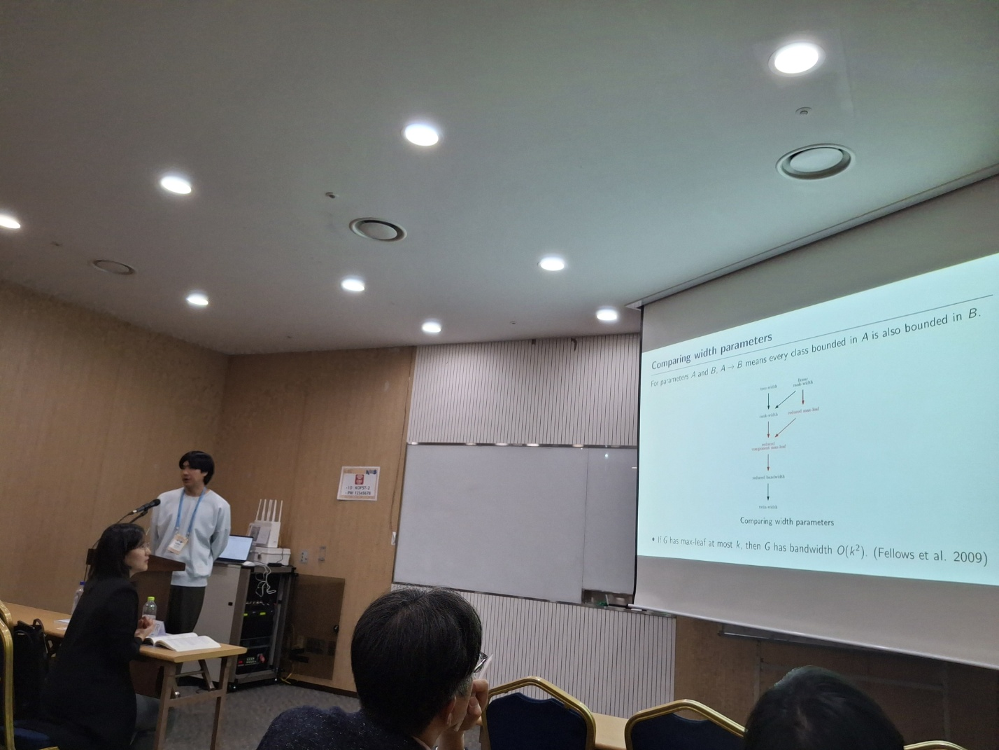
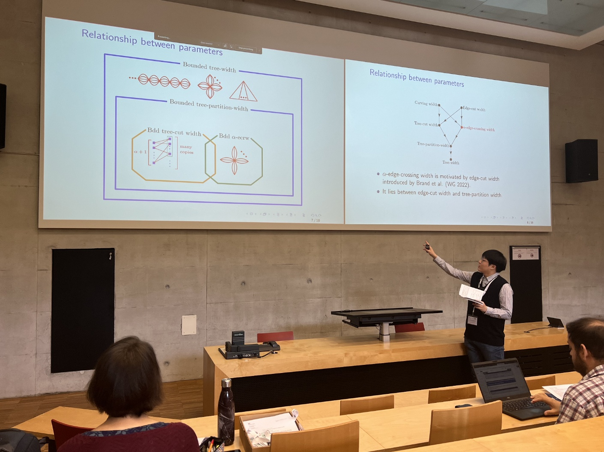

People
Research team
Ph.D students
이명환 (Lee, Myounghwan) (Master) 2022.3-2023.8, (Ph.D) 2023.9-
장연수 (Chang, Yeonsu) (Integrated Ph.D) 2022.3-
박혜미 (Park, Hyemi) (Integrated Ph.D) 2024.3-
변정완 (Master) 2026.3-
(papers of students)
- QPTAS for Max Weight Independent Set in Graphs with Strongly Edge-Sublinear Separators
(Édouard Bonnet and Yeonsu Chang)
arXiv:2610.16025 submitted - Max Independent Set Remains NP-hard when Excluding a Planar Induced Minor
(Édouard Bonnet and Yeonsu Chang)
arXiv:2609.11285 submitted - An FPT algorithm for cycle rank on semi-complete digraphs
(Seokbeom Kim, O-joung Kwon, and Myounghwan Lee)
ISAAC 2026, arXiv:2606.29336 - Moderately beyond clique-width: reduced component max-leaf and related parameter
(Édouard Bonnet, Yeonsu Chang, Julien Duron, Colin Geniet, O-joung Kwon)
ESA 2026, arXiv:2604.19138 - The optimal chromatic bound for even-hole-free graphs without induced seven-vertex paths
(Shenwei Huang, Yidong Zhou, Yeonsu Chang)
arxiv:2602.04403 submitted - An efficient algorithm for F-subgraph-free Edge Deletion on graphs having a product structure
(Shinwoo An, Seonghyuk Im, Seokbeom Kim, and Myounghwan Lee)
arXiv:2510.14674 submitted - Unavoidable butterfly minors in digraphs of large cycle rank
(Meike Hatzel, O-joung Kwon, Myounghwan Lee, and Sebastian Wiederrecht)
arXiv:2507.11814 submitted - Pre-assignment problem for unique minimum vertex cover on bounded clique-width graphs
(Shinwoo An, Yeonsu Chang, Kyungjin Cho, O-joung Kwon, Myounghwan Lee, Eunjin Oh, and Hyeonjun Shin)
Theoretical Computer Sciences 1084 (Sep 20, 2026), 116173, AAAI 2025, arXiv:2408.09591 - A characterization of graphs of radius-r flip-width at most 2
(Yeonsu Chang, Sejin Ko, O-joung Kwon, and Myounghwan Lee)
Discrete Mathematics 348(4) (Apr, 2025), 114366 arXiv:2306.15206 - A new width parameter of graphs based on edge cuts: \alpha-edge-crossing width
(Yeonsu Chang, O-joung Kwon, Myounghwan Lee)
Discrete Applied Mathematics 380 (Feb 15, 2026) pp. 492-510, WG 2023 arXiv:2302.04624

(Yeonsu Chang’s presentation at KMS meeting 2025, Seoul)

(Myounghwan Lee’s presentation at WG2023, Fribourg, Switzerland)
Postdoc position
조은경 (Eun Kyung Cho)
2024.3-2026.5
Visiting Scholars
Changqing Xi (Ph.D student in Nankai Univ) 2024.7-2025.7
Xiaopan Lian (Ph.D student in Nankai Univ) 2022.7-2024.6
Jian Sun (Postdoc in Nankai Univ) 2023.8-2024.7
Alumni
고세진 (Ko, Sejin) 2022.3-2024.2 (Master)
학부 연구원 모집
조합수학, 그래프론에서 재미있는 문제를 찾아보고 같이 푸는 것에 관심이 있다면 학부생 연구원으로 신청해 주세요.
메일로 신청하면 되겠습니다.